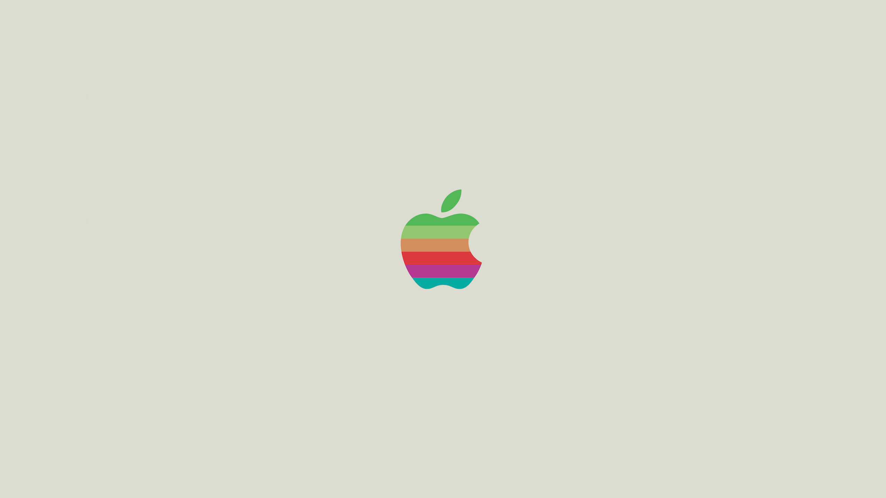

beRi
R environment, R installation, and R package management system for the R programming language.
beRi was built to help scientists.
BeRi will aim to support reproducible workflows by allowing virtualization and standardization for data analysis, while also supporting R’s native infrastructure.
4 Modular Components
- beRi (Integrated CLI)
- rinse (Standalone CLI)
- renv (Standalone CLI)
- rut (Standalone CLI)
Standalone CLIs
-
rinse
R Installation and version manager -
renv
Virtual Environment Manager -
rut
Package, Repository and Config manager
HackSeq 2019
Development Updates
-
 Renv
Ported renv over to MacOS!
MacOS file system was mapped manually from the Linux installation.
Windows support for renv currently under development, almost complete.
-
Rinse
Ported Rinse to Windows!
Added support for custom R installation, error handling and installation management.
Rtools, user input correction and logging also added along with UI improvements.
-
Rinse (MacOS)
Discovered security issues while porting rinse to MacOS.
Issue raised and workaround prototype was added.
Prototype written in bash.